إضافة اليوتيوب على stremio 📺
في هذا الشرح نتعرف على كيفية تشغيل اليوتيوب داخل تطبيق Stremio بدون إعلانات وبأعلى جودة ممكنة.
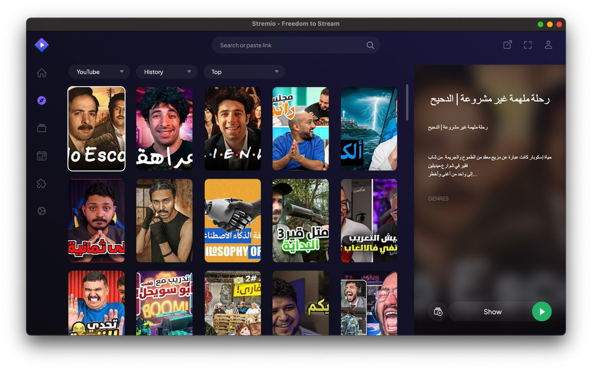
أولاً: تحميل إضافة cookies
في البداية، نحتاج لتحميل إضافة Get cookies.txt LOCALLY على متصفح كروم لاستخراج بيانات الدخول الخاصة بك.
رابط الإضافة: متجر كروم
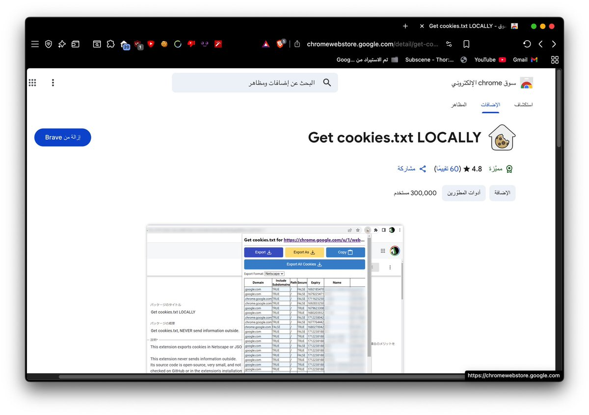
ثانياً: إعدادات الإضافة
بعد تثبيت الإضافة، توجه إلى إعداداتها وتأكد من تفعيل خيار "السماح بالإضافة في وضع المتصفح المتخفي" (Allow in Incognito).
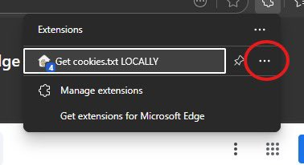
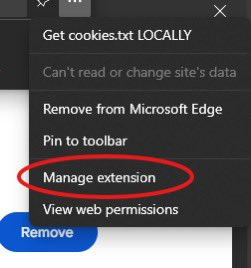
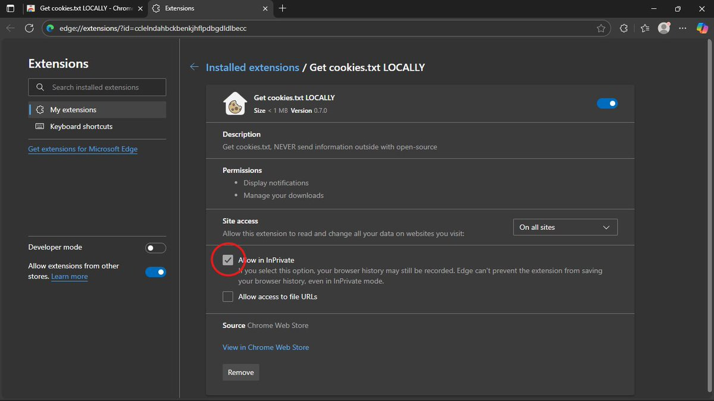
ثالثاً: استخراج الـ Cookies
افتح صفحة يوتيوب في وضع التخفي، سجل دخولك، ثم شغل الإضافة وانسخ الـ Cookies الظاهرة لك.
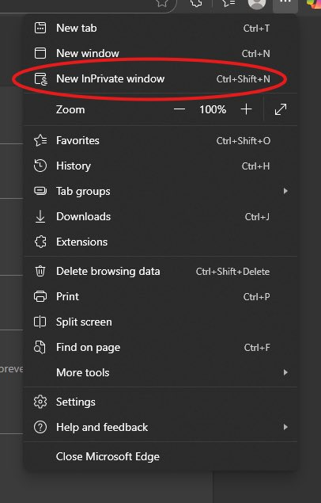
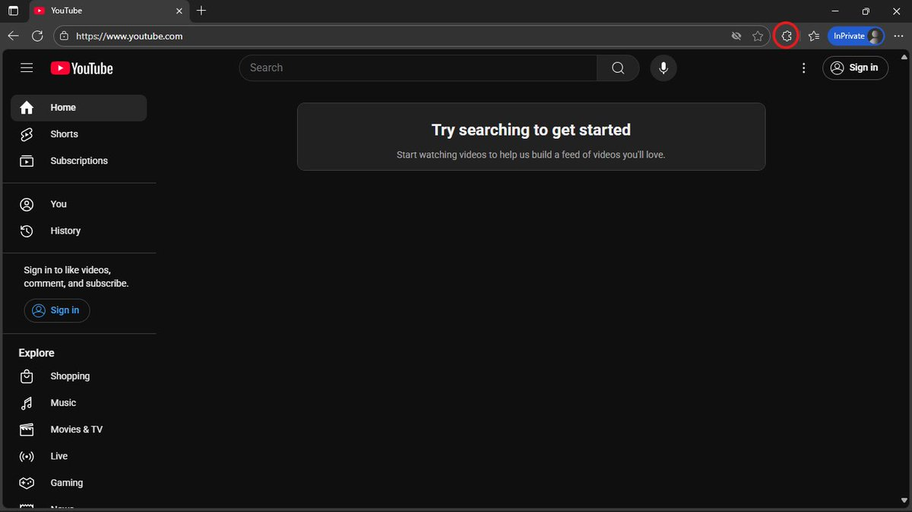
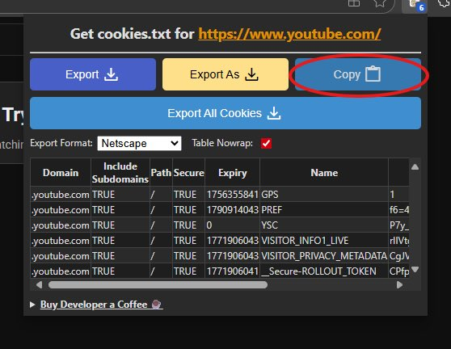
رابعاً: إعداد YouTubio
توجه إلى موقع إضافة YouTubio وألصق الـ Cookies التي نسختها في خانة Cookies.
رابط الإضافة: youtubio.elfhosted.com
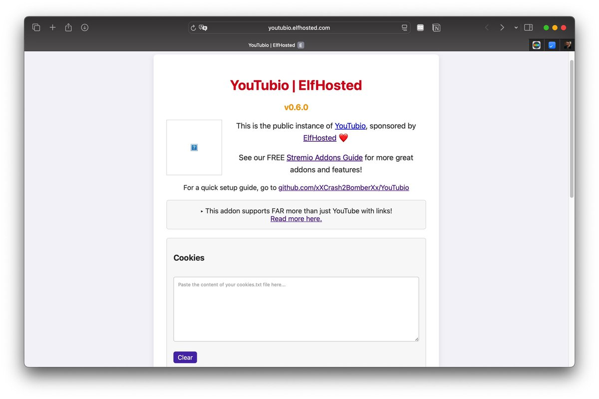
بعدها اضغط على Generate install link ثم اختر فتح في Stremio لتثبيت الإضافة.
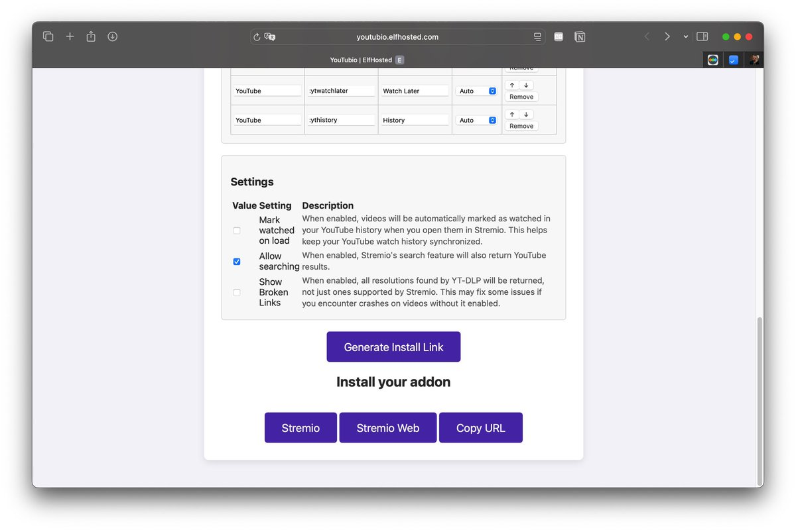
خامساً: تشغيل اليوتيوب في Stremio
للوصول لليوتيوب، اذهب إلى قسم Discover في التطبيق واختر YouTube من القائمة.

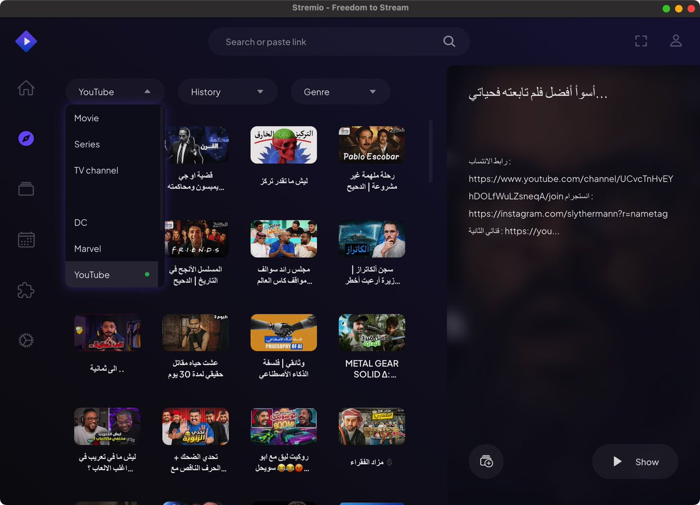
يمكنك الآن اختيار الجودة المفضلة وبدء المشاهدة بأفضل تجربة.
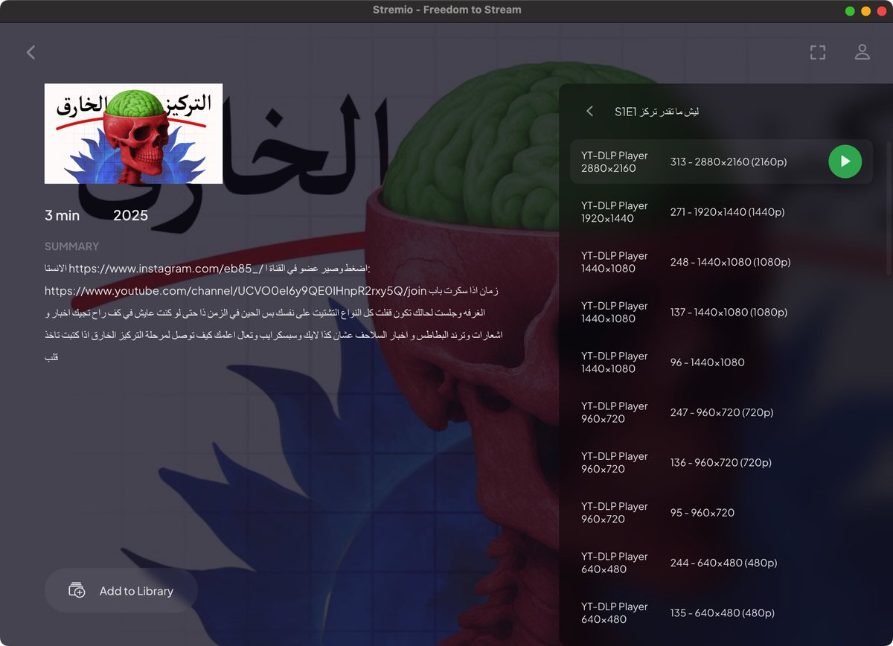
سادساً: تشغيل عبر VLC (اختياري)
إذا واجهت مشاكل في الجودة داخل مشغل Stremio، يمكنك الضغط على الثلاث نقاط واختيار Play in VLC.
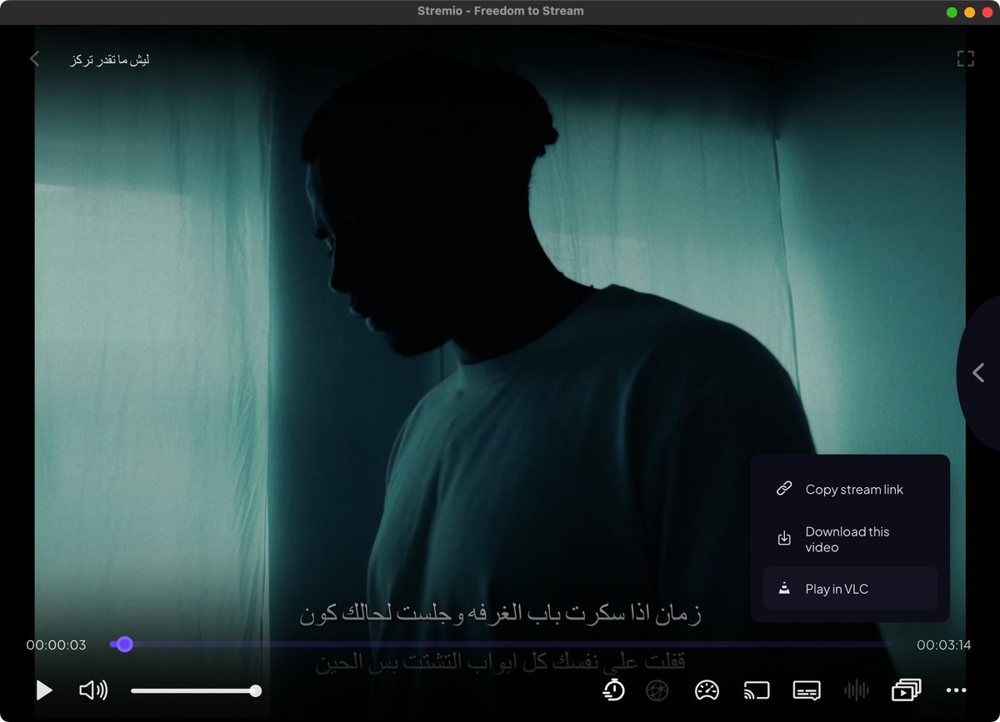

الخلاصة:
✅ الايجابيات: بدون إعلانات، التحكم في الألوان عبر VLC، جودات عالية.
❌ السلبيات: لا تعمل على ايفون، قد تحتاج لتحديث الـ Cookies أحياناً.